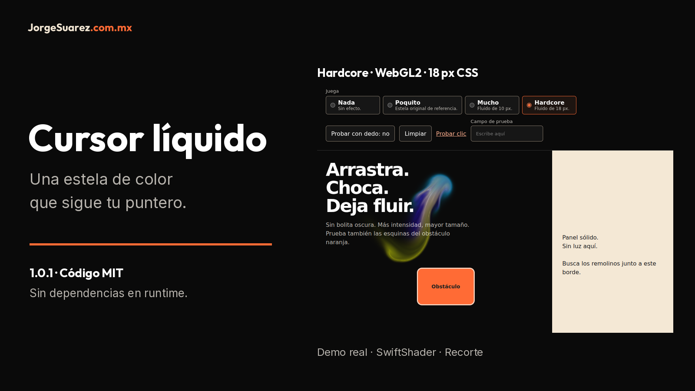

Mueve el mouse. Mira la estela.
Cuatro intensidades para una página web. Aquí ves el motor real, no una interfaz inventada.
13.04 s · Sin audio · Subtítulos ES/EN en el control CC del video.
Ver el cursor en acción
Español · English · Volver
Reproductor con subtítulos · MP4 original · VTT español
Qué mirar
| Momento |
Explicación visual |
| 00:00-00:03 |
La demo muestra los cuatro niveles; Hardcore está seleccionado. El área oscura deja ver la estela. |
| 00:03-00:06 |
El puntero recorre la zona oscura. Se ve una estela de fluido multicolor. |
| 00:06-00:09 |
Observa el obstáculo naranja y el límite del panel claro. Son superficies sólidas de esta demostración. |
| 00:09-00:13.04 |
La grabación termina con Mucho seleccionado, el nivel de radio menor. Para comparar por tu cuenta abre la demo local. |
Estos textos son explicaciones editoriales, no transcripción de voz. El video original no tiene pista de audio. La interfaz conserva español en ambos reproductores; el inglés traduce la explicación, no fabrica una nueva interfaz. Nada significa apagado; Poquito, puntitos; Mucho y Hardcore, fluido de 10 y 18 px CSS.
Procedencia y límites
Se reutilizan byte por byte cursor-liquido-restaurado-real.mp4, cursor-liquido-demo.gif y las cuatro capturas *-real.png que ya estaban en la base de este repositorio. La captura original declaró Chromium headless, WebGL por software SwiftShader, viewport 1000 × 850 y mouse de Playwright sobre la demo aprobada. Se conserva el mismo motor y adaptador en el código local 1.0.1; la grabación representa su aspecto, no demuestra por sí sola la corrección nueva de calidad adaptativa. Esa corrección tiene sus pruebas separadas.
El MP4 dura 13.04 s, H.264, 1000 × 850. No se edita el video ni se sustituyen píxeles de interfaz. El player agrega dos pistas VTT seleccionables y texto legible fuera del video. El GIF conserva su animación original. La cubierta usa un recorte de hardcore-real.png; la portada móvil muestra la captura completa a escala.
Las capturas de regresión originales pausaron la animación tras entrada real para que la codificación PNG no borrara la estela por inactividad. No miden FPS ni certifican GPU o teléfonos físicos. No hay datos personales en la demo.